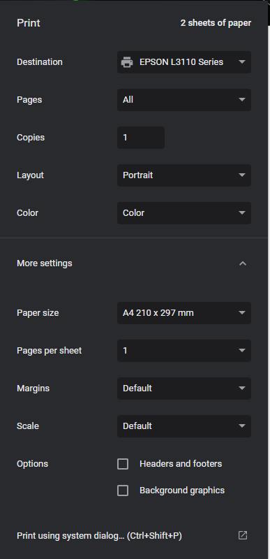

<div class="cover-container d-flex w-100 h-100 p-3 mx-auto flex-column text-center">
    <main class="px-3">
        <h1>Panduan Mencetak Tanda Terima</h1>
        <p class="lead">Pastikan untuk mengikuti panduan untuk mendapatkan tata letak dokumen yang benar.</p><br/>
        <ul>
            <li>Ukuran kertas : A4 (210x297mm)</li>
            <li>Halaman per lembar : 1</li>
            <li>Margin : Default</li>
            <li>Skala : Default</li>
            <li>Header dan footer : hapus centang</li>
            <li>Gambar latas belakang : hapus centang</li>
        </ul><br/>
        <p class="lead">atau seperti contoh gambar di bawah.</p><br/>
        
    </main>
</div>